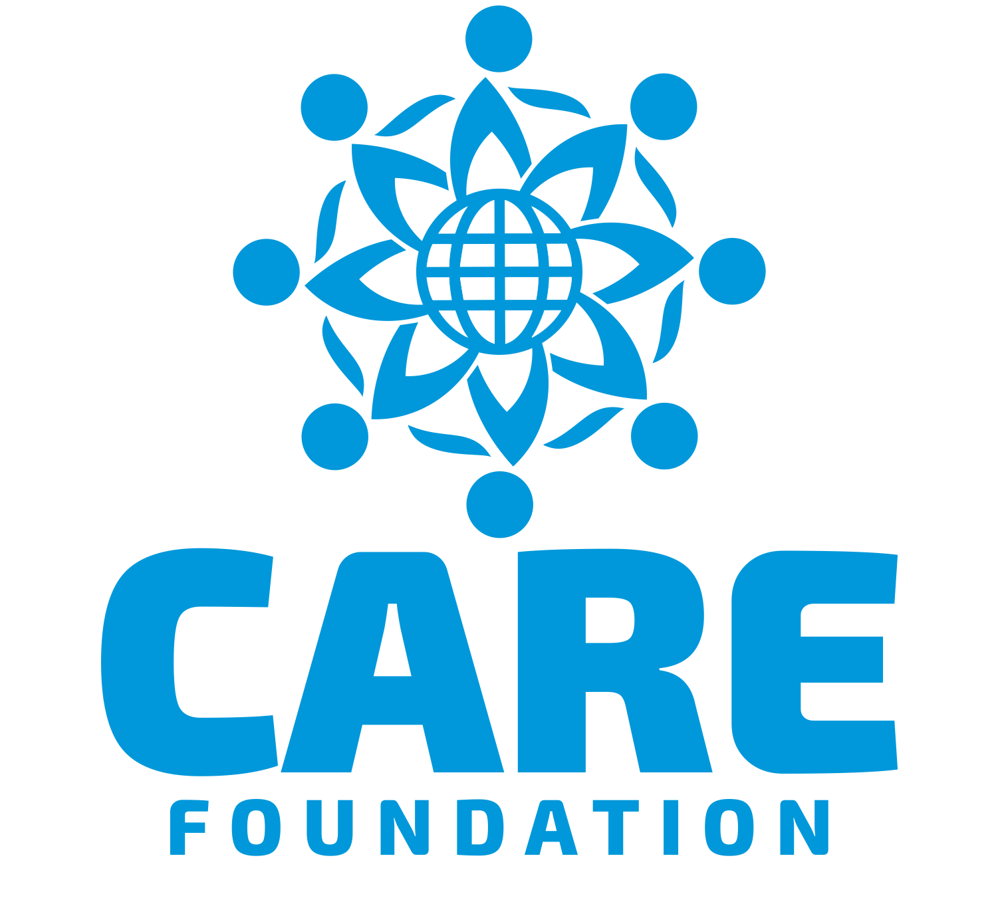

A Noble Initiative by CARE Foundation — in memory of Mrs. Asha Anil Bhatkal
Project ASHA is a heartfelt tribute to the late Mrs. Asha Anil Bhatkal, a dedicated social worker known for her compassion and long-standing service to uplift communities. The initiative focuses on three main pillars to create sustainable, long-term impact.
Supporting underprivileged students to achieve their academic goals.
We provide financial aid, school supplies and mentorship to encourage continued education and reduce dropout rates. Scholarship recipients are connected with local mentors and monitored for progress.
M
Medical Subsidy
Making healthcare accessible by easing medical expenses.
We offer support for medical treatments, health camps and subsidies for families in need. Partnerships with local clinics help streamline care and lower costs for urgent healthcare needs.
MF
Micro Finance
Financial assistance for small businesses and entrepreneurship.
Micro loans and financial guidance help small enterprises—particularly women-led groups—gain traction and become self-sufficient. We combine training with seed funding for higher success rates.
Empowering Women
Vocational training & courses
Project ASHA provides employment-oriented courses, vocational training, and partner-led workshops to help women gain marketable skills and steady incomes.
Collaborations & Partners
Through partnerships with local NGOs and training centers, CARE Foundation scales Project ASHA’s impact and reaches more communities.
• Training partners for skill development
• Local clinics & health camps
• Community leaders & mentors

A Living Tribute
Project ASHA carries forward Mrs. Asha Bhatkal’s mission: to uplift, empower, and support individuals, ensuring everyone has the chance at a dignified and fulfilling life.